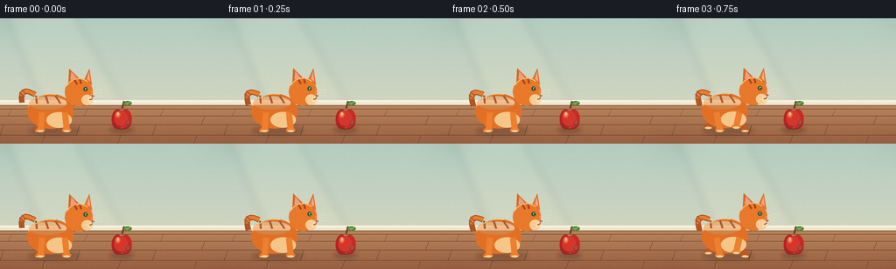
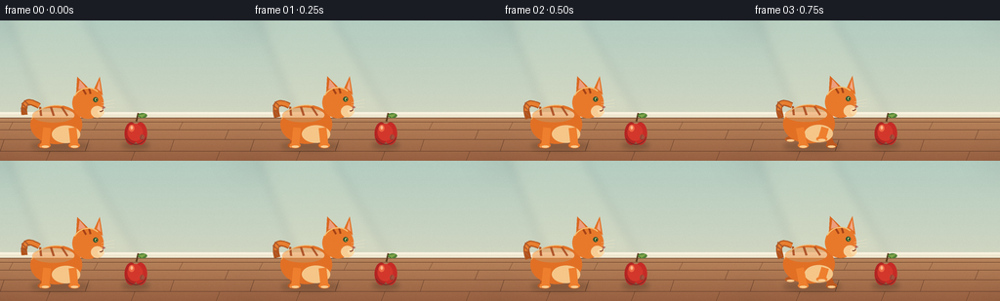
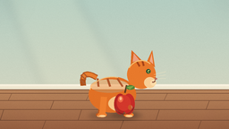
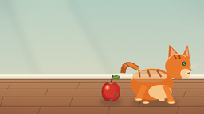
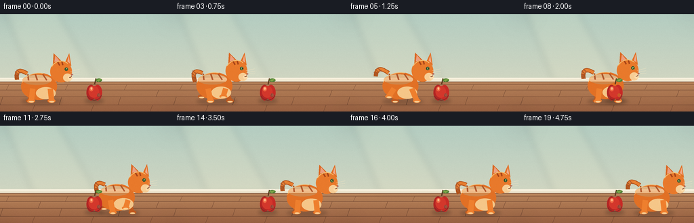
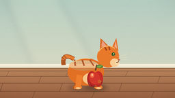

CODING AGENTS AS PIXEL WORLD MODELS
traex/DeepSeek-V4.1-Flash · instance_preservation_0006
点击播放 · 原生 RGB 像素
逐轮保存的候选
回放视频、检查图与代码变化。
每份候选均可单独播放。实际图片检查记录在下方工具轨迹中。
候选 01播放与检查图
点击播放 · 原生 RGB 像素

展开代码变化
--- 上一保存版本
+++ 本次保存版本
@@ -0,0 +1,405 @@
+from __future__ import annotations
+
+import math
+from pathlib import Path
+
+import numpy as np
+from PIL import Image, ImageDraw, ImageFilter
+
+from artifact_io import save
+
+
+WIDTH = 256
+HEIGHT = 144
+FRAMES = 20
+FPS = 4
+SS = 4
+
+
+def sx(value: float) -> int:
+ return int(round(value * SS))
+
+
+def box(values: tuple[float, float, float, float]) -> tuple[int, int, int, int]:
+ return tuple(sx(value) for value in values)
+
+
+def rgba(color: tuple[int, int, int], alpha: int = 255) -> tuple[int, int, int, int]:
+ return (*color, alpha)
+
+
+def smoothstep(value: float) -> float:
+ value = min(1.0, max(0.0, value))
+ return value * value * (3.0 - 2.0 * value)
+
+
+def make_background() -> Image.Image:
+ width = WIDTH * SS
+ height = HEIGHT * SS
+ yy = np.linspace(0.0, 1.0, height, dtype=np.float32)[:, None]
+ wall_top = np.array([180, 205, 194], dtype=np.float32)
+ wall_bottom = np.array([222, 218, 193], dtype=np.float32)
+ wall = wall_top * (1.0 - yy[..., None]) + wall_bottom * yy[..., None]
+ wall = np.repeat(wall, width, axis=1)
+
+ floor_top = np.array([184, 132, 91], dtype=np.float32)
+ floor_bottom = np.array([151, 96, 65], dtype=np.float32)
+ floor_y = np.clip((np.arange(height, dtype=np.float32) - 100 * SS) / (44 * SS), 0, 1)[:, None, None]
+ floor = floor_top * (1.0 - floor_y) + floor_bottom * floor_y
+ floor = np.repeat(floor, width, axis=1)
+ floor_mask = np.arange(height)[:, None] >= 100 * SS
+ image = np.where(floor_mask[..., None], floor, wall).astype(np.uint8)
+
+ rng = np.random.default_rng(14)
+ grain = rng.normal(0.0, 2.2, (height, width, 1)).astype(np.float32)
+ image = np.clip(image.astype(np.float32) + grain, 0, 255).astype(np.uint8)
+ canvas = Image.fromarray(image, "RGB").convert("RGBA")
+ draw = ImageDraw.Draw(canvas, "RGBA")
+
+ # Soft daylight falling from the upper left.
+ light = Image.new("RGBA", canvas.size, (0, 0, 0, 0))
+ light_draw = ImageDraw.Draw(light, "RGBA")
+ light_draw.polygon(
+ [(sx(8), sx(0)), (sx(87), sx(0)), (sx(143), sx(100)), (sx(49), sx(100))],
+ fill=(255, 245, 207, 24),
+ )
+ light = light.filter(ImageFilter.GaussianBlur(sx(5)))
+ canvas.alpha_composite(light)
+
+ # Baseboard and subtle wall trim.
+ draw.rectangle((0, sx(94), width, sx(100)), fill=rgba((238, 230, 207)))
+ draw.rectangle((0, sx(94), width, sx(96)), fill=rgba((248, 241, 222)))
+ draw.line((0, sx(100), width, sx(100)), fill=rgba((117, 77, 54), 85), width=sx(0.7))
+
+ # Oak floor boards, with restrained perspective.
+ plank_edges = [104, 112, 122, 134, 144]
+ for index, y in enumerate(plank_edges[:-1]):
+ draw.line((0, sx(y), width, sx(y)), fill=rgba((103, 63, 43), 46), width=sx(0.55))
+ offset = (index * 47 + 13) % 103
+ while offset < WIDTH:
+ draw.line(
+ (sx(offset), sx(y), sx(offset - 4), sx(plank_edges[index + 1])),
+ fill=rgba((107, 67, 46), 38),
+ width=sx(0.45),
+ )
+ offset += 87
+
+ # Very light vignette keeps attention on the two subjects.
+ vignette = Image.new("L", canvas.size, 0)
+ vd = ImageDraw.Draw(vignette)
+ vd.ellipse(box((-34, -28, 290, 173)), fill=255)
+ vignette = vignette.filter(ImageFilter.GaussianBlur(sx(18)))
+ shade = Image.new("RGBA", canvas.size, (46, 35, 31, 255))
+ shade.putalpha(Image.eval(vignette, lambda value: int((255 - value) * 0.12)))
+ canvas.alpha_composite(shade)
+ return canvas
+
+
+def add_soft_shadow(
+ canvas: Image.Image,
+ center_x: float,
+ center_y: float,
+ radius_x: float,
+ radius_y: float,
+ alpha: int = 72,
+) -> None:
+ layer = Image.new("RGBA", canvas.size, (0, 0, 0, 0))
+ draw = ImageDraw.Draw(layer, "RGBA")
+ draw.ellipse(
+ box((center_x - radius_x, center_y - radius_y, center_x + radius_x, center_y + radius_y)),
+ fill=(55, 38, 29, alpha),
+ )
+ layer = layer.filter(ImageFilter.GaussianBlur(sx(2.4)))
+ canvas.alpha_composite(layer)
+
+
+def draw_tail(draw: ImageDraw.ImageDraw, x: float, y: float, swish: float) -> None:
+ start = (x - 20, y - 19)
+ control = (x - 38, y - 30 + swish * 2.5)
+ end = (x - 35 + swish * 4.0, y - 10 + swish * 4.0)
+ points = []
+ for step in range(19):
+ t = step / 18
+ px = (1 - t) ** 2 * start[0] + 2 * (1 - t) * t * control[0] + t**2 * end[0]
+ py = (1 - t) ** 2 * start[1] + 2 * (1 - t) * t * control[1] + t**2 * end[1]
+ points.append((sx(px), sx(py)))
+ draw.line(points, fill=rgba((178, 83, 27)), width=sx(6.2), joint="curve")
+ draw.line(points[:-4], fill=rgba((231, 126, 48)), width=sx(3.9), joint="curve")
+ for t in (0.47, 0.68, 0.87):
+ px = (1 - t) ** 2 * start[0] + 2 * (1 - t) * t * control[0] + t**2 * end[0]
+ py = (1 - t) ** 2 * start[1] + 2 * (1 - t) * t * control[1] + t**2 * end[1]
+ draw.line(
+ (sx(px - 3.2), sx(py - 2.2), sx(px + 2.4), sx(py + 2.8)),
+ fill=rgba((163, 70, 24), 220),
+ width=sx(1.6),
+ )
+
+
+def draw_leg(
+ draw: ImageDraw.ImageDraw,
+ hip_x: float,
+ ground_y: float,
+ foot_x: float,
+ lift: float,
+ color: tuple[int, int, int],
+ near: bool,
+) -> None:
+ hip_y = ground_y - 20
+ foot_y = ground_y - lift
+ draw.line(
+ (sx(hip_x), sx(hip_y), sx(foot_x), sx(foot_y)),
+ fill=rgba(color),
+ width=sx(7.0 if near else 6.0),
+ )
+ draw.ellipse(
+ box((foot_x - 5.0, foot_y - 2.5, foot_x + 5.2, foot_y + 2.7)),
+ fill=rgba(color),
+ )
+ draw.ellipse(
+ box((foot_x - 3.6, foot_y + 0.2, foot_x + 4.0, foot_y + 2.6)),
+ fill=rgba((248, 205, 145)),
+ )
+
+
+def draw_cat(canvas: Image.Image, anchor_x: float, phase: float, moving: bool) -> None:
+ layer = Image.new("RGBA", canvas.size, (0, 0, 0, 0))
+ draw = ImageDraw.Draw(layer, "RGBA")
+ ground_y = 128.0
+ if moving:
+ bob = -1.4 * abs(math.sin(phase * math.pi))
+ else:
+ bob = -0.55 * (1.0 + math.sin(phase * math.pi * 2)) * 0.5
+ body_y = 107.0 + bob
+ swish = math.sin(phase * math.pi * 2)
+
+ draw_tail(draw, anchor_x, body_y, swish)
+
+ # Far legs move in counterphase to the near pair.
+ stride = math.sin(phase * math.pi * 2) * (5.5 if moving else 0.0)
+ draw_leg(draw, anchor_x - 14, ground_y, anchor_x - 16 - stride, max(0.0, stride) * 0.65, (190, 89, 31), False)
+ draw_leg(draw, anchor_x + 13, ground_y, anchor_x + 15 + stride, max(0.0, -stride) * 0.65, (190, 89, 31), False)
+
+ # Main body and lighter chest.
+ draw.ellipse(
+ box((anchor_x - 29, body_y - 20, anchor_x + 24, body_y + 20)),
+ fill=rgba((225, 112, 37)),
+ )
+ draw.ellipse(
+ box((anchor_x - 7, body_y + 1, anchor_x + 22, body_y + 19)),
+ fill=rgba((245, 198, 136)),
+ )
+ draw.ellipse(
+ box((anchor_x - 27, body_y - 17, anchor_x + 16, body_y - 2)),
+ fill=rgba((238, 139, 59), 120),
+ )
+
+ # Three soft tabby markings across the back.
+ for offset, tilt in ((-15, -3), (-4, -1), (7, 2)):
+ draw.line(
+ (
+ sx(anchor_x + offset - 4),
+ sx(body_y - 18),
+ sx(anchor_x + offset + tilt),
+ sx(body_y - 9),
+ ),
+ fill=rgba((170, 69, 22), 225),
+ width=sx(2.2),
+ )
+
+ # Near legs.
+ draw_leg(draw, anchor_x - 12, ground_y, anchor_x - 14 + stride, max(0.0, -stride) * 0.7, (238, 127, 46), True)
+ draw_leg(draw, anchor_x + 14, ground_y, anchor_x + 16 - stride, max(0.0, stride) * 0.7, (238, 127, 46), True)
+
+ head_x = anchor_x + 30
+ head_y = body_y - 22 + bob * 0.35
+ head_r = 16.0
+
+ # Ears sit behind the head circle.
+ draw.polygon(
+ [
+ (sx(head_x - 12), sx(head_y - 10)),
+ (sx(head_x - 11), sx(head_y - 27)),
+ (sx(head_x + 1), sx(head_y - 15)),
+ ],
+ fill=rgba((218, 103, 34)),
+ )
+ draw.polygon(
+ [
+ (sx(head_x - 9.8), sx(head_y - 14)),
+ (sx(head_x - 8.5), sx(head_y - 23.5)),
+ (sx(head_x - 2.5), sx(head_y - 16.2)),
+ ],
+ fill=rgba((236, 159, 128)),
+ )
+ draw.polygon(
+ [
+ (sx(head_x + 6), sx(head_y - 14)),
+ (sx(head_x + 12), sx(head_y - 27)),
+ (sx(head_x + 15), sx(head_y - 8)),
+ ],
+ fill=rgba((226, 112, 38)),
+ )
+ draw.polygon(
+ [
+ (sx(head_x + 9.2), sx(head_y - 14.8)),
+ (sx(head_x + 11.6), sx(head_y - 23)),
+ (sx(head_x + 13), sx(head_y - 11.8)),
+ ],
+ fill=rgba((240, 169, 135)),
+ )
+
+ draw.ellipse(
+ box((head_x - head_r, head_y - head_r, head_x + head_r, head_y + head_r)),
+ fill=rgba((232, 121, 43)),
+ )
+ draw.ellipse(
+ box((head_x + 3, head_y + 3, head_x + 16, head_y + 15)),
+ fill=rgba((247, 205, 149)),
+ )
+ draw.ellipse(
+ box((head_x + 10, head_y + 6, head_x + 16.5, head_y + 12.5)),
+ fill=rgba((251, 218, 168)),
+ )
+
+ # Forehead stripes and side profile.
+ draw.line(
+ (sx(head_x - 5), sx(head_y - 14), sx(head_x - 2), sx(head_y - 9)),
+ fill=rgba((166, 67, 23)),
+ width=sx(2.2),
+ )
+ draw.line(
+ (sx(head_x + 1), sx(head_y - 15), sx(head_x + 2.5), sx(head_y - 9.5)),
+ fill=rgba((166, 67, 23)),
+ width=sx(1.9),
+ )
+
+ # Alert green eye, nose, mouth and whiskers.
+ draw.ellipse(box((head_x + 5.2, head_y - 6.0, head_x + 10.2, head_y - 1.0)), fill=rgba((45, 79, 47)))
+ draw.ellipse(box((head_x + 7.0, head_y - 5.0, head_x + 9.5, head_y - 1.9)), fill=rgba((159, 201, 95)))
+ draw.ellipse(box((head_x + 8.1, head_y - 4.2, head_x + 9.2, head_y - 2.3)), fill=rgba((26, 34, 25)))
+ draw.ellipse(box((head_x + 7.4, head_y - 4.7, head_x + 8.1, head_y - 3.9)), fill=rgba((247, 247, 223)))
+ draw.polygon(
+ [
+ (sx(head_x + 15.2), sx(head_y + 3.4)),
+ (sx(head_x + 18.5), sx(head_y + 4.6)),
+ (sx(head_x + 15.0), sx(head_y + 6.2)),
+ ],
+ fill=rgba((163, 73, 65)),
+ )
+ draw.arc(
+ box((head_x + 10.5, head_y + 5.0, head_x + 15.5, head_y + 9.0)),
+ start=350,
+ end=115,
+ fill=rgba((124, 61, 42)),
+ width=sx(0.9),
+ )
+ for index, y_offset in enumerate((-0.2, 2.3, 4.7)):
+ draw.line(
+ (
+ sx(head_x + 14),
+ sx(head_y + y_offset),
+ sx(head_x + 27),
+ sx(head_y - 3 + y_offset * 1.3 + index * 0.5),
+ ),
+ fill=rgba((250, 232, 195), 235),
+ width=sx(0.55),
+ )
+
+ # A restrained rim light makes the silhouette legible against the wall.
+ draw.arc(
+ box((head_x - head_r, head_y - head_r, head_x + head_r, head_y + head_r)),
+ start=208,
+ end=310,
+ fill=rgba((255, 185, 95), 210),
+ width=sx(1.2),
+ )
+ draw.arc(
+ box((anchor_x - 29, body_y - 20, anchor_x + 24, body_y + 20)),
+ start=195,
+ end=284,
+ fill=rgba((255, 174, 82), 180),
+ width=sx(1.1),
+ )
+ canvas.alpha_composite(layer)
+
+
+def draw_apple(canvas: Image.Image) -> None:
+ center_x = 139.0
+ center_y = 115.0
+ layer = Image.new("RGBA", canvas.size, (0, 0, 0, 0))
+ draw = ImageDraw.Draw(layer, "RGBA")
+
+ # Stem and leaf.
+ draw.line(
+ (sx(center_x + 0.5), sx(center_y - 11.5), sx(center_x + 2.5), sx(center_y - 20)),
+ fill=rgba((92, 57, 31)),
+ width=sx(1.7),
+ )
+ draw.ellipse(box((center_x + 2, center_y - 20, center_x + 11.5, center_y - 15)), fill=rgba((80, 130, 55)))
+ draw.polygon(
+ [
+ (sx(center_x + 3), sx(center_y - 18)),
+ (sx(center_x + 11), sx(center_y - 19.5)),
+ (sx(center_x + 6), sx(center_y - 15.3)),
+ ],
+ fill=rgba((126, 164, 72)),
+ )
+
+ # Two overlapping lobes make a recognizable apple silhouette.
+ draw.ellipse(box((center_x - 11.5, center_y - 10.5, center_x + 2.0, center_y + 12.5)), fill=rgba((178, 37, 35)))
+ draw.ellipse(box((center_x - 2.0, center_y - 10.5, center_x + 11.5, center_y + 12.5)), fill=rgba((198, 43, 38)))
+ draw.ellipse(box((center_x - 8.5, center_y - 9.0, center_x + 7.0, center_y + 8.5)), fill=rgba((211, 55, 43)))
+ draw.ellipse(box((center_x - 7.2, center_y - 8.0, center_x - 1.5, center_y - 1.0)), fill=rgba((239, 104, 68)))
+ draw.ellipse(box((center_x - 5.6, center_y - 7.1, center_x - 3.0, center_y - 3.3)), fill=rgba((255, 185, 136)))
+ draw.ellipse(box((center_x + 4.0, center_y + 2.0, center_x + 8.7, center_y + 7.5)), fill=rgba((145, 27, 31), 100))
+ draw.arc(
+ box((center_x - 11.5, center_y - 10.5, center_x + 11.5, center_y + 12.5)),
+ start=18,
+ end=154,
+ fill=rgba((111, 25, 30), 185),
+ width=sx(1.0),
+ )
+ canvas.alpha_composite(layer)
+
+
+def render_frame(index: int, background: Image.Image) -> np.ndarray:
+ canvas = background.copy()
+
+ if index <= 2:
+ cat_x = 60.0
+ moving = False
+ phase = index / 8.0
+ elif index >= 14:
+ cat_x = 196.0
+ moving = False
+ phase = (index - 14) / 8.0
+ else:
+ u = (index - 2) / 12.0
+ cat_x = 60.0 + 136.0 * smoothstep(u)
+ moving = True
+ phase = (index - 2) / 4.0
+
+ # Ground shadows keep both instances anchored while the cat crosses.
+ add_soft_shadow(canvas, 139.0, 128.0, 14.0, 3.2, 78)
+ add_soft_shadow(canvas, cat_x + 1.0, 129.0, 30.0, 4.0, 68)
+ draw_cat(canvas, cat_x, phase, moving)
+ draw_apple(canvas)
+
+ # A whisper of film grain prevents flat vector-like color fields.
+ rng = np.random.default_rng(1000 + index)
+ pixels = np.asarray(canvas.convert("RGB"), dtype=np.int16)
+ grain = rng.integers(-2, 3, (HEIGHT * SS, WIDTH * SS, 1), dtype=np.int16)
+ pixels = np.clip(pixels + grain, 0, 255).astype(np.uint8)
+ frame = Image.fromarray(pixels, "RGB").resize((WIDTH, HEIGHT), Image.Resampling.LANCZOS)
+ return np.asarray(frame, dtype=np.uint8)
+
+
+def main() -> None:
+ case_dir = Path(__file__).resolve().parent
+ background = make_background()
+ frames = np.stack([render_frame(index, background) for index in range(FRAMES)])
+ save(frames, case_dir)
+
+
+if __name__ == "__main__":
+ main()
候选 02播放与检查图
点击播放 · 原生 RGB 像素


展开代码变化
--- 上一保存版本
+++ 本次保存版本
@@ -53,7 +53,7 @@
rng = np.random.default_rng(14)
grain = rng.normal(0.0, 2.2, (height, width, 1)).astype(np.float32)
image = np.clip(image.astype(np.float32) + grain, 0, 255).astype(np.uint8)
- canvas = Image.fromarray(image, "RGB").convert("RGBA")
+ canvas = Image.fromarray(image).convert("RGBA")
draw = ImageDraw.Draw(canvas, "RGBA")
# Soft daylight falling from the upper left.
@@ -144,15 +144,15 @@
color: tuple[int, int, int],
near: bool,
) -> None:
- hip_y = ground_y - 20
+ hip_y = ground_y - 18
foot_y = ground_y - lift
draw.line(
(sx(hip_x), sx(hip_y), sx(foot_x), sx(foot_y)),
fill=rgba(color),
- width=sx(7.0 if near else 6.0),
- )
- draw.ellipse(
- box((foot_x - 5.0, foot_y - 2.5, foot_x + 5.2, foot_y + 2.7)),
+ width=sx(8.0 if near else 7.0),
+ )
+ draw.ellipse(
+ box((foot_x - 5.5, foot_y - 2.7, foot_x + 5.7, foot_y + 2.9)),
fill=rgba(color),
)
draw.ellipse(
@@ -176,8 +176,8 @@
# Far legs move in counterphase to the near pair.
stride = math.sin(phase * math.pi * 2) * (5.5 if moving else 0.0)
- draw_leg(draw, anchor_x - 14, ground_y, anchor_x - 16 - stride, max(0.0, stride) * 0.65, (190, 89, 31), False)
- draw_leg(draw, anchor_x + 13, ground_y, anchor_x + 15 + stride, max(0.0, -stride) * 0.65, (190, 89, 31), False)
+ draw_leg(draw, anchor_x - 14, ground_y, anchor_x - 16 - stride, max(0.0, stride) * 1.15, (190, 89, 31), False)
+ draw_leg(draw, anchor_x + 13, ground_y, anchor_x + 15 + stride, max(0.0, -stride) * 1.15, (190, 89, 31), False)
# Main body and lighter chest.
draw.ellipse(
@@ -207,8 +207,8 @@
)
# Near legs.
- draw_leg(draw, anchor_x - 12, ground_y, anchor_x - 14 + stride, max(0.0, -stride) * 0.7, (238, 127, 46), True)
- draw_leg(draw, anchor_x + 14, ground_y, anchor_x + 16 - stride, max(0.0, stride) * 0.7, (238, 127, 46), True)
+ draw_leg(draw, anchor_x - 12, ground_y, anchor_x - 14 + stride, max(0.0, -stride) * 1.2, (238, 127, 46), True)
+ draw_leg(draw, anchor_x + 14, ground_y, anchor_x + 16 - stride, max(0.0, stride) * 1.2, (238, 127, 46), True)
head_x = anchor_x + 30
head_y = body_y - 22 + bob * 0.35
@@ -390,7 +390,7 @@
pixels = np.asarray(canvas.convert("RGB"), dtype=np.int16)
grain = rng.integers(-2, 3, (HEIGHT * SS, WIDTH * SS, 1), dtype=np.int16)
pixels = np.clip(pixels + grain, 0, 255).astype(np.uint8)
- frame = Image.fromarray(pixels, "RGB").resize((WIDTH, HEIGHT), Image.Resampling.LANCZOS)
+ frame = Image.fromarray(pixels).resize((WIDTH, HEIGHT), Image.Resampling.LANCZOS)
return np.asarray(frame, dtype=np.uint8)
可观测工具轨迹
实际执行的命令与返回图片。
命令 1exit 0
/bin/bash -c "pwd && rg --files -g 'prompt.txt' -g 'GENERATION_RULES.md' -g 'task_spec.json' -g '"'!**/.git/**'"'"
命令 2exit 0
/bin/bash -c 'ls -la'
命令 3exit 0
/bin/bash -c 'cat prompt.txt'
命令 4exit 0
/bin/bash -c 'cat GENERATION_RULES.md'
命令 5exit 0
/bin/bash -c 'cat task_spec.json'
命令 6exit 0
/bin/bash -c "sed -n '1,240p' artifact_io.py"
命令 7exit 0
/bin/bash -c 'python generate.py'
命令 8exit 127
/bin/bash -c 'identify inspection.png transition_check.png frames/00.png frames/19.png'
命令 9exit 0
/bin/bash -c "ls -lh pixels.npz index.html inspection.png transition_check.png frames | sed -n '1,30p'"
命令 10exit 127
/bin/bash -c "montage frames/*.png -tile 5x4 -geometry 256x144+4+4 -background '#1b1e23' .tmp/all_frames.png"
命令 11exit 127
/bin/bash -c "file frames/00.png frames/19.png pixels.npz index.html && python - <<'PY'
import json
from pathlib import Path
import numpy as np
p = np.load('pixels.npz')['pixels']
print('pixels:', p.shape, p.dtype)
data = json.loads(Path('index.html').read_text().split('const data = ', 1)[1].split(';\\n', 1)[0]) if 'const data = ' in Path('index.html').read_text() else None
print('frames on disk:', len(list(Path('frames').glob('*.png'))))
print('all frames unique:', len({Path(f'frames/{i:02d}.png').read_bytes() for i in range(20)}))
PY"命令 12exit 0
/bin/bash -c 'python generate.py'
命令 13exit 0
/bin/bash -c "python - <<'PY'
from pathlib import Path
import json
import numpy as np
from PIL import Image
pixels = np.load('pixels.npz')['pixels']
assert pixels.shape == (144, 256, 20)
assert len(list(Path('frames').glob('*.png'))) == 20
for i in range(20):
image = Image.open(f'frames/{i:02d}.png')
assert image.size == (256, 144) and image.mode == 'RGB'
html = Path('index.html').read_text()
assert '\"frames\":20' in html and '\"width\":256' in html and '\"height\":144' in html
assert Path('inspection.png').is_file() and Path('transition_check.png').is_file()
print('validated: 20 RGB frames, 256x144, 4 fps payload, player and inspection artifacts')
PY"视觉工具实际返回图片 1

视觉工具实际返回图片 2

视觉工具实际返回图片 3

视觉工具实际返回图片 4

视觉工具实际返回图片 5

视觉工具实际返回图片 6

保存候选 2 份；完成命令 13 次；可验证图片返回 6 张。原始 API 响应与完整日志保留在本地。